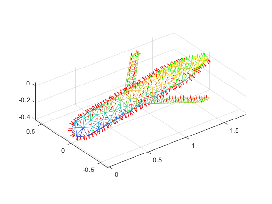
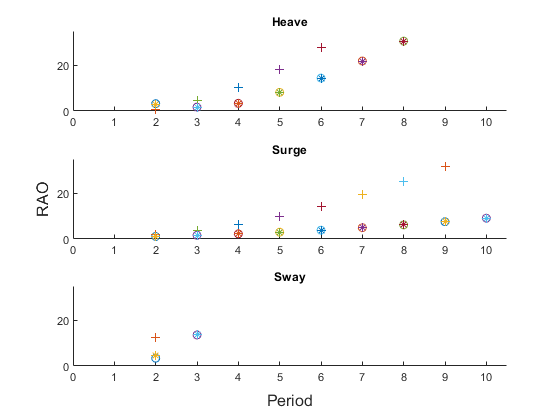

Contents
Loads And Plots Glider's Mesh
NOTE: FFR -> Flagged For Removal
% NOTE: Replace this with iterative asq??? addpath('asq'); % Makes a traingulation object of the mesh model = "models/Glider v9"; to = stlread(append(model,".stl")); % For some reason the model is read 10 times too small??? to = triangulation(to.ConnectivityList, to.Points * 10); % FFR: Plots traingulation object figure(1); trimesh(to); hold on axis equal % Finds each triangle's center point and face normal vectors CP = incenter(to); FN = faceNormal(to); % FFR: Plotes the triangulation object's normals quiver3(CP(:,1),CP(:,2),CP(:,3), ... FN(:,1),FN(:,2),FN(:,3),0.5,'color','r'); % Records the number of surface triangles [N,~] = size(to); % Creates each triangle's 6-dimensional normal vector FN6 = zeros(N,3); FN6(:,1:3) = FN(:,:); FN6(:,4:6) = cross(CP(:,:),FN(:,:)); % Plotes the triangulation object's rotational normals quiver3(CP(:,1),CP(:,2),CP(:,3), ... FN6(:,4),FN6(:,5),FN6(:,6),0.5,'color','g');
Loads Saved Data
% Defines save files tstr = append(model,'-ts.txt'); % replace with [] if file doesn't exist raostr = append(model,'-raos.txt'); % replace with [] if file doesn't exist phistr = append(model,'-phis.txt'); % replace with [] if file doesn't exist % Reads from savefiles rts = readmatrix(tstr); rraos = readmatrix(raostr); rphis = readmatrix(phistr);
Defines RAO Variables
% Temporarily define response inputs g = 9.81; p = 997; % water density l = 106.4; % wavelength k = 2*pi()/l; % wavenumber a = 1; % wave amplitude pm = [9,0,0,-0.3 18,0.34,0,-0.24004882; 18,0.68,0,-0.18009764; 18,1.2,0,-0.12014646; 18,1.4,0,-0.0531422; 9,1.7,0,0]; % point masses along body length (x) nts = 2:10; %union(2:10,4:0.2:6); % list of wave periods Ts = setdiff(nts,rts); [~,nT] = size(Ts); thetas = [0,pi()/2,pi()]; % list of incident angles thetac = ["o","+","*"]; % list of plot modifiers for each theta [~,ntheta] = size(thetas);
Solves For The Glider's RAOs
M = bodyInertiaMatrix(pm); C = hydrostaticRestoringMatrix(pm,g); % Defines a list of N triangles so that parfor can nicely slice data Tri = zeros(3,3,N); for j = 1:N Tri(:,:,j) = to.Points(to.ConnectivityList(j,:),:); end phis = zeros(6,N,nT); RAOs = zeros(6,ntheta,nT); for j = 1:nT w = 2*pi()/Ts(j); % sets angular frequency K = w^2/g; % sets K(w) phis(:,:,j) = velocityPotential(N,CP,FN,FN6,Tri,K); [A,B] = addedMassAndDampingMatrices(Tri,phis(:,:,j),FN,p,w); for i = 1:ntheta [F] = excitingForce(Tri,phis(:,:,j),FN,p,k,g,thetas(i)); nu = linsolve(-w^2*(M + A) + 1i*w*B + C,F); H = nu / a; % response function RAOs(:,i,j) = abs(H); % response amplitude operator end end
Writes To New Save Files
% Combines saved data with new data Tcs = [Ts,setdiff(rts,Ts)]; [~,nTc] = size(Tcs); phics = zeros(6,N,nTc); phics(:,:,1:nT) = phis(:,:,:); RAOcs = zeros(6,ntheta,nTc); RAOcs(:,:,1:nT) = RAOs(:,:,:); for j = 1:nTc - nT phics(:,:,nT+j) = rphis(6*j-5:6*j,:); RAOcs(:,:,nT+j) = rraos(6*j-5:6*j,:); end % Writes combined data to file writematrix(Tcs, tstr); fid = fopen(raostr,'w'); fclose(fid); fid = fopen(phistr,'w'); fclose(fid); for j = 1:nTc writematrix(RAOcs(:,:,j),raostr,'WriteMode','append') writematrix(phics(:,:,j),phistr,'WriteMode','append') end
Plots RAOs
figure(2) tl = tiledlayout(3,1); ax1 = nexttile; title(ax1,'Heave') hold on ax2 = nexttile; title(ax2,'Surge') hold on ax3 = nexttile; title(ax3,'Sway') hold on xlim([0.5 10.5]) ylim([0 35]) linkaxes([ax1,ax2,ax3],'xy') xlabel(tl,'Period') ylabel(tl,'RAO') t.TileSpacing = 'compact'; for j = 1:nTc for i = 1:ntheta plot(ax1,Tcs(j),RAOcs(3,i,j),thetac(i)) plot(ax2,Tcs(j),RAOcs(1,i,j),thetac(i)) plot(ax3,Tcs(j),RAOcs(2,i,j),thetac(i)) end end